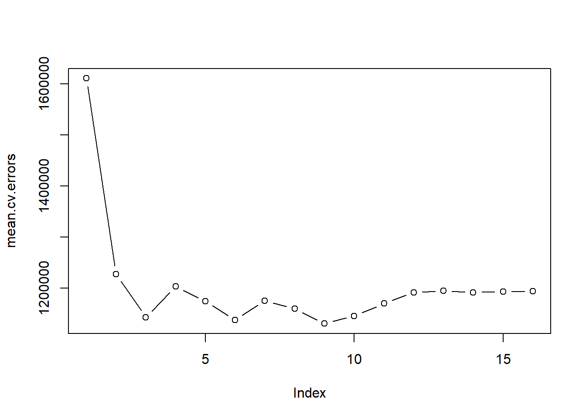

In the dynamic world of sports, the ability to anticipate game attendance is crucial for effective stadium management, marketing strategies, and fan engagement. This project presents a comprehensive prediction model specifically designed for estimating the number of viewers attending home games of Viborg FF, a prominent Danish soccer club. By leveraging data-driven approaches and advanced analytical techniques, the model aims to provide accurate forecasts that can assist in optimizing the overall matchday experience.
Viborg FF, with its rich history and dedicated fanbase, presents an interesting case study for attendance prediction. The club’s performance, league standings, opponent strength, ticket pricing, weather conditions, and special events are among the numerous factors that can influence game attendance. This project delves into these aspects, utilizing historical data and statistical methods to build a robust predictive framework.
The objective of this endeavor is not only to aid Viborg FF in planning and resource allocation but also to contribute to the broader field of sports analytics. By offering insights into fan behavior and attendance patterns, this model seeks to enhance the understanding of factors driving spectator turnout in soccer, particularly within the context of Danish football.
In the following sections, the methodology, data sources, analytical techniques, and results of the prediction model will be thoroughly discussed, demonstrating the model’s effectiveness and potential applications.
2 Analysis
The project embarked on developing a predictive model for estimating the attendance at Viborg FF home games with a structured and methodical approach. The initial stage involved importing data through API calls and web scraping, a technique that proved essential in gathering a diverse range of public data. This included team performance statistics, league standing, TV channels, weather conditions, and details of special events.
Data is imported by API-call and webscrabing. All the data is publicly available. Data is imported from DMI, DST, kalender365.dk and www.superstats.dk. By the end dataset are merged and cleaned in order to do the statistical analysis. Different variables are added in order to perform explorative analysis.
Code
#Vi starter med at hente tabeller for superligaen, alle sæsoner mellem 2007/2008 - 2023/2024# Superliga kampprogram for sæson 2007/2008 - 2023/2024 -------------------library(rvest)library(stringr)library(dplyr)# Funktion til at hente og behandle data fra en tabelscrape_and_process_table <-function(url, table_number) {# Hent HTML fra websiden page <-read_html(url)# Hent tabel med det angivne nummer table <-html_table(page, fill =TRUE, convert =FALSE)[[table_number]]# Giv kolonnerne de ønskede navnecolnames(table) <-c("Ugedag", "Dato", "Hold", "Score", "Tilskuere", "Dommer", "Ekstra")# Tilføj en ny kolonne 'Runde' med værdien svarende til tabelnummeret table$Runde <- table_number# Udtræk sæsonsværdien fra URL'en og tilføj en sæsonkolonne table$Sæson <-str_extract(url, "\\d{4}%2F\\d{4}") table$Ugedag <-as.character(table$Ugedag)return(table)}# Liste med sæsoner fra 2007/2008 til 2022/2023seasons <-seq(2007, 2022)# Tom liste til at gemme resultater fra hver sæsonseasons_results <-list()# Funktion til at finde antallet af tabeller, der indeholder "Runde"find_number_of_round_tables <-function(url) { page <-read_html(url) tables <-html_nodes(page, "table") round_tables <-which(str_detect(html_text(tables), "Runde|runde"))return(round_tables)}# Loop over sæsonerfor (season in seasons) {# Angiv URL'en for den aktuelle sæson url <-paste0("https://superstats.dk/program?aar=", season, "%2F", season +1)# Find tabeller, der indeholder "Runde" round_tables <-find_number_of_round_tables(url)# Loop over de fundne tabeller og gem resultaterne i en liste tables_list <-map_df(round_tables, ~scrape_and_process_table(url, .x))# Bind tablerne sammen i en enkelt data frame season_result_df <-bind_rows(tables_list)# Fjern kolonne 'Ekstra' season_result_df <- dplyr::select(season_result_df, -Ekstra)# Gem resultatet for denne sæson i den overordnede liste seasons_results[[as.character(season)]] <- season_result_df}# Bind tablerne fra alle sæsoner sammen i en samlet data frame for sæsonerfinal_season_result <-bind_rows(seasons_results)# Erstat %2F med / i Sæsonfinal_season_result <- final_season_result %>%mutate(Sæson =str_replace(Sæson, "%2F", "/"))allesasoner <- final_season_result# Her henter vi den sidste superligasæson 2023/2024 -----------------------# URL til websidenurl1 <-"https://superstats.dk/program"# Hent websidens indholdpage <-GET(url1)# Parse HTML indholdetpage_content <-read_html(page)# Find alle <th> elementer med klassen "leftalign", der indeholder "Runde"runde_navne <- page_content %>%html_nodes("th.leftalign") %>%html_text() %>% .[str_detect(., "Runde")]# Find alle tabeller i HTML indholdettables <-html_table(page_content, fill =TRUE, convert =FALSE)# Opret en tom liste til at gemme tibblestibble_list <-list()# Behandl hver tabel og gem som tibble i listenfor (i in1:length(tables)) {if (ncol(tables[[i]]) >=6&& i <=length(runde_navne)) {# Tjek antallet af kolonner og tilføj et ekstra kolonnenavn, hvis det er nødvendigtif (ncol(tables[[i]]) >6) {colnames(tables[[i]]) <-c("Ugedag", "Dato", "Hold", "Score", "Tilskuere", "Dommer", paste("Ekstra", 1:(ncol(tables[[i]]) -6))) } else {colnames(tables[[i]]) <-c("Ugedag", "Dato", "Hold", "Score", "Tilskuere", "Dommer") }# Udtræk runde nummeret fra teksten runde_nummer <-str_extract(runde_navne[i], "\\d+")# Tilføj runde nummeret som en kolonne tables[[i]]$Runde <-as.numeric(runde_nummer)# Tilføj 'Sæson' kolonne med værdien '2023/2024' tables[[i]]$Sæson <-'2023/2024'# Konverter til tibble og gem i listen tibble_table <-as_tibble(tables[[i]]) tibble_list[[i]] <- tibble_table } else {warning(paste("Tabel", i, "har ikke nok kolonner og/eller mangler et tabelnavn og er udeladt.")) }}# Kombiner alle tibbles til én enkelt tibblecombined_tibble <-bind_rows(tibble_list)Sason2324 <- combined_tibble |> dplyr::select(-"Ekstra 1")#kombiner de to datasætsuperliga <-bind_rows(Sason2324, allesasoner)superliga <- superliga %>%mutate(Dato_udtrukket =parse_date_time(Dato, orders =c("dmHM", "dHM")),Dato_udtrukket =if_else(year(Dato_udtrukket) ==0,update(Dato_udtrukket, year =sample(2020, 1)), Dato_udtrukket) )superliga$Tid_udtrukket <-format(parse_date_time(superliga$Dato, orders =c("dmHM", "dHM")), "%H:%M")superliga1 <- superliga %>%mutate(Dato_udtrukket =as.Date(Dato_udtrukket), # Konverterer POSIXct til Date Årstal =case_when(month(Dato_udtrukket) %in%7:12~as.numeric(str_extract(Sæson, "^\\d{4}")),TRUE~as.numeric(str_extract(Sæson, "\\d{4}$")) ),Ny_Dato_udtrukket =paste(Årstal, format(Dato_udtrukket, "-%m-%d")) ) %>%mutate(Ny_Dato_udtrukket =str_replace(Ny_Dato_udtrukket, " -", "-")) %>%separate(Hold, into =c("Hjemmehold", "Udehold"), sep ="-", remove =FALSE) %>%separate(Score, into =c("Hjemmeholdsmål", "Udeholdsmål"), sep ="-", remove =FALSE) %>% dplyr::select(-Dato, -Dommer, -Sæson, -Dato_udtrukket, -Årstal, -Hold, -Score) %>%rename(Tid = Tid_udtrukket, Dato = Ny_Dato_udtrukket) %>%arrange(Dato) %>%mutate(ID =row_number(),Hjemmehold =str_replace_all(Hjemmehold, c("FCN"="FC Nordsjælland","RFC"="Randers FC","EFB"="Esbjerg fB","AGF"="AGF","OB"="Odense Boldklub","FCM"="FC Midtjylland","BIF"="Brøndby IF","VFF"="Viborg FF","LBK"="Lyngby BK","ACH"="AC Horsens","AaB"="Aalborg BK","FCK"="FC København","FCV"="FC Vestsjælland","SDR"="SønderjyskE","HOB"="Hobro IK","SIF"="Silkeborg IF","VB"="Vejle Boldklub","HIF"="Helsingør IF" )),Udehold =str_replace_all(Udehold, c("FCN"="FC Nordsjælland","RFC"="Randers FC","EFB"="Esbjerg fB","AGF"="AGF","OB"="Odense Boldklub","FCM"="FC Midtjylland","BIF"="Brøndby IF","VFF"="Viborg FF","LBK"="Lyngby BK","ACH"="AC Horsens","AaB"="Aalborg BK","FCK"="FC København","FCV"="FC Vestsjælland","SDR"="SønderjyskE","HOB"="Hobro IK","SIF"="Silkeborg IF","VB"="Vejle Boldklub","HIF"="Helsingør IF" )),`Superliga/1.Division`=1 ) %>% dplyr::select(ID, everything())superliga1 <- superliga1 %>%mutate(Tilskuere =gsub("[.]", "", Tilskuere), # Fjerner punktummerTilskuere =as.numeric(Tilskuere))head(superliga)# Superliga TV ------------------------------------------------------------# Funktion til at ekstrahere data fra hver tdextract_td_data <-function(td, id, season) { img <-html_node(td, "img")if (!is.null(img)) {return(data.frame(ID = id,Season = season,Type ="Image",Source =html_attr(img, "src"),Alt =html_attr(img, "alt"),Content =NA )) } else { text_content <-html_text(td)return(data.frame(ID = id,Season = season,Type ="Text",Source =NA,Alt =NA,Content =ifelse(text_content =="", "0", text_content) )) }}# Generer en liste over sæsoner fra 2007/2008 til 2023/2024seasons1 <-paste0(2007:2023, "%2F", 2008:2024)# Tom data.frame til at samle resultaterneall_data1 <-data.frame()for (season1 in seasons1) {# Opdater URL for hver sæson url1 <-paste0("https://superstats.dk/program?aar=", season1)# Fetch the webpage page1 <- httr::GET(url1)# Parse HTML content1 <-read_html(page1)# Find alle td-tags med den specificerede style td_elements1 <-html_nodes(content1, xpath ="//td[@style='text-align:center;']")# Anvend funktionen på hver td og saml resultaterne for sæsonen td_data1 <-lapply(seq_along(td_elements1), function(i) extract_td_data(td_elements1[i], i, season1)) td_data1 <-bind_rows(td_data1)# Tilføj data til den samlede data.frame all_data1 <-rbind(all_data1, td_data1)}superligaTV <- all_data1## Her ændrer vi ID variablen så den går igennem alle observationersuperligaTV <- superligaTV %>%mutate(ID =row_number()) %>% dplyr::select(-Season, -Type, -Content, -Source)# Her leftjoiner vi med datasættet med Kampdatasættet på IDsamletsuperliga <-left_join(superligaTV, superliga1, by ="ID")#Denne kode skaber et nyt datasæt Samletsuperliga_filtered, der indeholder kun de rækker fra Samletsuperligam, hvor Hjemmehold er "Viborg FF" eller Udehold er "Viborg FF".vffsuperliga <- samletsuperliga %>%filter(Hjemmehold =="Viborg FF"| Udehold =="Viborg FF")vffsuperliga <- vffsuperliga %>%mutate(Runde =as.numeric(as.character(Runde)))# Hente program fra 1. division sæson 2007/2008- 2023/2024 ----------------# Angiv start- og slutåret for loopetstart_year <-2007end_year <-2023# Tom liste til at gemme tabeller for hvert årall_tables <-list()# Loop igennem hvert årfor (year in start_year:end_year) {# Opret URL'en baseret på det aktuelle år url <-paste0("https://superstats.dk/1div/program?aar=", year, "%2F", year +1)# Send en GET-anmodning for at få HTML-indholdet response <-GET(url) content <-content(response, "text")# Brug rvest til at læse HTML-indholdet page <-read_html(content)# Find alle tabeller, der indeholder "Runde" i navnet tables1 <-html_table(html_nodes(page, "table:contains('Runde')"), convert =FALSE)# Kombiner tabellerne og tilføj en kolonne med originaltabel-ID tables_combined <-bind_rows(tables1, .id ="OriginalTableID")# Gem tabellen i listen all_tables[[as.character(year)]] <- tables_combined}# Kombiner alle tabeller fra forskellige år til én stor tibblefinal_table <-bind_rows(all_tables)danish_weekdays <-c("Mandag", "Tirsdag", "Onsdag", "Torsdag", "Fredag", "Lørdag", "Søndag")# Fjern kolonner med mindst én observation svarende til danske ugedagetables_combined_filtered <- final_table %>% dplyr::select(-where(~any(. %in% danish_weekdays)))div <- tables_combined_filtered %>% dplyr::select(-...7) %>%mutate(...3 =gsub("kl.", " ", ...3)) %>%separate(...3, into =c("Dato", "Tid"), sep ="\\s+") %>%mutate(Dato =dmy(Dato)) %>%separate(Res, into =c("Hjemmeholdsmål", "Udeholdsmål"), sep ="-") %>%mutate(Dato =as.Date(Dato))# Angiv dansk lokalisation for ugedage med korrekt karakterkodningSys.setlocale(category ="LC_TIME", locale ="Danish_Denmark.UTF-8")div <- div %>%mutate(Ugedag =weekdays(Dato)) %>%mutate(Ugedag =case_when( Ugedag =="søndag"~"Søn", Ugedag =="mandag"~"Man", Ugedag =="tirsdag"~"Tir", Ugedag =="onsdag"~"Ons", Ugedag =="torsdag"~"Tor", Ugedag =="fredag"~"Fre", Ugedag =="lørdag"~"Lør",TRUE~ Ugedag # Bevar uændrede navne for andre dage ))div# Opret en vektor med stigende numre baseret på antallet af rækker i "div"id_vector <-seq_len(nrow(div))# Tilføj denne vektor som en kolonne med navnet "ID" til dataframe'endiv$ID <- id_vectordiv1 <- div %>% dplyr::select(ID, everything()) %>%rename(Runde = OriginalTableID) %>%separate(Kamp, into =c("Hjemmehold", "Udehold"), sep ="-") %>%mutate("Superliga/1.Division"=0)div1 <- div1 %>%mutate(Tilskuere =gsub("[.]", "", Tilskuere), # Fjerner punktummerTilskuere =as.numeric(Tilskuere))# 1. Division TV ----------------------------------------------------------#Hent TV variabler for 1. div en løkke der henter for 2007/2008 til 2023/2024# Funktion til at ekstrahere data fra hver tdextract_td_data <-function(td, id, season) { img <-html_node(td, "img")if (!is.null(img)) {return(data.frame(ID = id,Season = season,Type ="Image",Source =html_attr(img, "src"),Alt =html_attr(img, "alt"),Content =NA )) } else { text_content <-html_text(td)return(data.frame(ID = id,Season = season,Type ="Text",Source =NA,Alt =NA,Content =ifelse(text_content =="", "0", text_content) )) }}# Generer en liste over sæsoner fra 2007/2008 til 2023/2024seasons <-paste0(2007:2023, "%2F", 2008:2024)# Tom data.frame til at samle resultaterneall_data <-data.frame()for (season in seasons) {# Opdater URL for hver sæson url <-paste0("https://superstats.dk/1div/program?aar=", season)# Fetch the webpage page <- httr::GET(url)# Parse HTML content <-read_html(page)# Find alle td-tags med den specificerede style td_elements <-html_nodes(content, xpath ="//td[@style='text-align:center;']")# Anvend funktionen på hver td og saml resultaterne for sæsonen td_data <-lapply(seq_along(td_elements), function(i) extract_td_data(td_elements[i], i, season)) td_data <-bind_rows(td_data)# Tilføj data til den samlede data.frame all_data <-rbind(all_data, td_data)}TV <- all_data[, !(names(all_data) %in%c("Season", "Type", "Content", "Source"))]DivTV <- TV %>%mutate(ID =row_number())samletdivision <-left_join(DivTV, div1, by ="ID")VFFdivision <- samletdivision %>%filter(Udehold =="Viborg FF"| Hjemmehold =="Viborg FF") %>%mutate(Runde =as.numeric(as.character(Runde)),Dato =as.character(Dato) )vffsuperliga <- vffsuperliga %>%mutate(Tilskuere =as.numeric(Tilskuere))str(VFFdivision)str(vffsuperliga)# Kombinering af VFFs ude og hjemmekampe i Superliga og 1. Division -------VFFallesasoner <-bind_rows(VFFdivision, vffsuperliga)#sorter efter datoVFFallesasoner <- VFFallesasoner %>%arrange(Dato)# Variabler ---------------------------------------------------------------# Tilføjelse af form variablenviborg_resultat_hjemme <- VFFallesasoner %>%filter(Hjemmehold =="Viborg FF") %>%mutate('V/U/T'=case_when( Hjemmeholdsmål > Udeholdsmål ~2, Hjemmeholdsmål == Udeholdsmål ~1, Hjemmeholdsmål < Udeholdsmål ~0, TRUE~NA_real_ ))# Viborgs udekampe sorteres ud for at udregne formenviborg_resultat_ude <- VFFallesasoner %>%filter(Udehold =="Viborg FF") %>%mutate('V/U/T'=case_when( Udeholdsmål > Hjemmeholdsmål ~2, Udeholdsmål == Hjemmeholdsmål ~1, Udeholdsmål < Hjemmeholdsmål ~0, TRUE~NA_real_ ))samlet_resultat_viborg <- viborg_resultat_hjemme %>%full_join(viborg_resultat_ude) %>%arrange(Dato) # Her udregnes formen# 2 = God form# 1 = Middel form# 0 = Dårlig formviborg_form <- samlet_resultat_viborg %>%arrange(Dato) %>%mutate(Sidste_5_sum =lag(rollapplyr(`V/U/T`, width =5, FUN = sum, fill =NA, align ="right")),Sidste_5_sum =ifelse(is.na(Sidste_5_sum), 0, Sidste_5_sum),Form =case_when(is.na(Sidste_5_sum) ~NA_real_, Sidste_5_sum <=2~0, Sidste_5_sum >=3& Sidste_5_sum <=7~1, Sidste_5_sum >=8~2 ) ) %>% dplyr::select(-`V/U/T`, -Sidste_5_sum)# Tilføjelse af ferieugerviborg_ferieuge <- viborg_form %>%mutate(Ugenummer =isoweek(as.Date(Dato)))ferieuger <-c(7, 28, 29, 30, 42)viborg_ferieuge <- viborg_ferieuge %>%mutate(Ferieuger =ifelse(Ugenummer %in% ferieuger, 1, 0)) %>% dplyr::select(-Ugenummer)# Her tilføjes modstander variablen# Definer ABC holdA_hold <-c('FC København', 'Brøndby IF', 'FC Midtjylland')B_hold <-c('Silkeborg IF', 'AGF', 'Aalborg BK', 'Randers FC')# Create dummy variables for home opponentsviborg_ferieuge$'Modstander Type'<-ifelse(viborg_ferieuge$Udehold %in% A_hold, 0,ifelse(viborg_ferieuge$Udehold %in% B_hold, 1, 2))# Her tilføjes variablen for hvilken dag på ugen der spilles# 0 = Hverdage# 1 = Lørdag# 2 = Søndag# Definer hverdageHverdage =c('Man', 'Tir', 'Ons', 'Tor', 'Fre')# Dummy variabler for dageviborg_ferieuge$Dagtype <-ifelse(viborg_ferieuge$Ugedag %in% Hverdage, 0, ifelse(viborg_ferieuge$Ugedag =='Lør', 1, 2))# Her udregnes tidspunkt på dagen# 2 = Efter 18:00:00# 1 = Mellem eller lige med 15:00:00 - 18:00:00# 0 = Før 15:00:00viborg_ferieuge <- viborg_ferieuge %>%mutate(Tid =gsub("\\.", ":", Tid)) %>%mutate(Tid =parse_time(Tid))viborg_ferieuge <- viborg_ferieuge %>%mutate('Tid på dagen'=case_when( lubridate::hms(Tid) < lubridate::hms("15:00:00") ~0, lubridate::hms(Tid) >= lubridate::hms("15:00:00") & lubridate::hms(Tid) <= lubridate::hms("18:00:00") ~1, lubridate::hms(Tid) > lubridate::hms("18:00:00") ~2,TRUE~NA_integer_ ))popular_TV <-c("TV3+", "TV2 SPORT", "TV3 Sport")viborg_ferieuge <- viborg_ferieuge %>%mutate('Populær kanal'=ifelse(Alt %in% popular_TV, 1, 0)) %>% dplyr::select(-Alt)superstats <- viborg_ferieugestr(superstats)# Hent data fra DMI -------------------------------------------------------# Funktion til at hente data for et givet parameterget_data_for_parameter <-function(parameter) {# Initialiser en tom liste til at gemme dataframes for hver dag dataframes_list <-list()# Løkke gennem datoer current_date <- start_datewhile (current_date <= end_date) {# Opret URL med den aktuelle dato og parameter req_url <-paste0("stationId=06060&datetime=", format(current_date, "%Y-%m-%dT12:00:00Z"), "&limit=300000¶meterId=", parameter) full_url <-paste0(base_url, info_url, req_url, api_key)# Hent data fra API api_call <- httr::GET(full_url)# Kontroller statuskodenif (http_type(api_call) =="application/json"&& api_call$status_code ==200) {# Hvis alt er i orden, fortsæt med at håndtere data api_char <- base::rawToChar(api_call$content) api_JSON <- jsonlite::fromJSON(api_char, flatten =TRUE) list_dmi <- api_JSON# Kontroller om dataframen indeholder observationerif (length(list_dmi$features) >0) {# Konverter til dataframe og tilføj til listen dataframe <-as.data.frame(do.call(cbind, list_dmi)) dataframes_list[[as.character(current_date)]] <- dataframe }# Kommenter næste linje ud for at undlade at udskrive beskeden# cat("Ingen observationer kl. 12 for", current_date, "\n") } # Fjern kommenteringen fra næste linje, hvis du vil udskrive fejlmeddelelser# else {# cat("Fejl ved hentning af data for", current_date, "\n")# }# Opdater datoen til næste dag current_date <- current_date +1 }# Returner listen af dataframes for parameteretreturn(dataframes_list)}# Liste af parametreparameters <-c("temp_dry", "wind_speed", "humidity", "visibility", "precip_past1h", "humidity_past1h")# Startdato og slutdatostart_date <-as.Date("2007-01-01")end_date <-as.Date("2023-12-04")# Basis URL for API-kaldbase_url <-"https://dmigw.govcloud.dk/v2/"info_url <-"metObs/collections/observation/items?"api_key <-"&api-key=7d5db05b-3c27-4b2b-ac78-728ddd02a9aa"#Husk at indsætte egen DMI# Initialiser en tom liste til at gemme dataframes for hvert parameterall_dataframes_list <-list()# Iterer gennem parametre og hent datafor (param in parameters) { param_dataframes_list <-get_data_for_parameter(param) all_dataframes_list <-append(all_dataframes_list, param_dataframes_list)}# Kombiner alle dataframes til en stor dataframekarupdmiall <- dplyr::bind_rows(all_dataframes_list)# Opret kolonnercol1 <-as.vector(karupdmiall$features.properties.observed)col2 <-as.vector(karupdmiall$features.properties.parameterId)col3 <-as.vector(karupdmiall$features.properties.value)dmiAll1 <-data.frame(Dato =as.Date(col1),Tid =format(as.POSIXct(col1), "%H:%M:%S"),Observationer = col2, Værdi = col3) dmiAll1 <- dmiAll1 |>distinct(Dato, Observationer, Værdi, .keep_all =TRUE) |>pivot_wider(names_from = Observationer, values_from = Værdi) %>%rename(Temperatur = temp_dry,Fugtighed = humidity,Synlighed = visibility,`Nedbør sidste time`= precip_past1h,`Fugtighed den sidste time`= humidity_past1h,Vindhastighed = wind_speed ) |> dplyr::select(-Tid)# Hent data fra Danmarks Statistik ----------------------------------------# https://api.statbank.dk/v1/data/FOLK1A/JSONSTAT?OMRÅDE=791&KØN=1&ALDER=>30<60&CIVILSTAND=U&Tid=2022K3## Her bygger vi vores api kald opbase_url <-"https://api.statbank.dk/v1/data/"data_url <-"FOLK1A/JSONSTAT?"info_url <-"OMR%C3%85DE=791&K%C3%98N=TOT&ALDER=IALT&CIVILSTAND=TOT&Tid=*"## her samler vi vores url til en url, som vi kalder api'et med full_url <- base::paste0(base_url, data_url, info_url)full_url## API callapi_call <- httr::GET(full_url) ## vi kalder API med et GET request ## API responseapi_call$status_code ## Her finder vi ud af, om der er response,##vi skulle gerne få status=200 hvis ikke er der noget galt med kaldet,##eller serveren er nede (ikke så sandsynligt).http_type(api_call)## Her kan vi se, hvilket format vi får tilbage; her er det## text/json## Her ser vi, om der kommer noget data med tilbage; dette er hexadecimal## Er der kun et par hexadecimaler oppe i venstre hjørne, så er der sikkert ## også noget galt med kaldet til API'etapi_call$content### Efter at have tjekket kaldet ovenfor og set, at vi får et brugbart response,### bruger vi "fromJSONstat" fra "rjstat" pakken. Denne parser JSONstat formatet### fra JSONstat objekter til en læsbar list: jsonList1 <-fromJSONstat(full_url)str(jsonList1)## Her laver vi så vores jsonlist1 om til en tibbleviborgindbyggere <-as.tibble(jsonList1)viborgindbyggereview(viborgindbyggere)viborgindbyggere <- viborgindbyggere %>%pull(1) %>% dplyr::select(value, tid)# Opret en sekvens af datoer fra 1.1.2008 til 1.11.2023 med daglig frekvensalle_datoer <-seq(as.Date("2008-01-01"), as.Date("2023-11-01"), by ="day")# Opret en ny dataframedatoer <-data.frame(Dato = alle_datoer,tid =paste0(format(alle_datoer, "%Y"), "K", quarter(alle_datoer)))# Vis de første rækker i resultatethead(datoer)# Foretag en venstre join mellem datoer og viborgindbyggereindbyggerdato <-merge(datoer, viborgindbyggere, by ="tid", all.x =TRUE)# Hent data fra kalender-365.dk -------------------------------------------# Opret en tom liste til at gemme data framesall_data <-list()# Loop gennem år fra 2007 til 2023for (year in2007:2023) {# Konstruér URL'en med det aktuelle år url <-paste0("https://www.kalender-365.dk/helligdage/", year, ".html")# Hent HTML fra URL'en html <-read_html(url)# Udtræk tabeldata fra HTML'en (tilpas selektoren efter behov) table_data <-html_table(html_nodes(html, ".table"), fill =TRUE)# Hvis der er data i tabellenif (!is.null(table_data)) {# Konverter data fra listen til et data frame data <-as.data.frame(table_data[[1]])# Gem data frame i listen all_data[[length(all_data) +1]] <- data }}# Sammenføj alle data frames i listen til én stor data frameHelligdage <-do.call(rbind, all_data)Helligdage <- Helligdage %>%filter(!Helligdage$Helligdag %in%c("Valentinsdag", "Sommertid", "Mors dag", "Fars dag", "Sankt Hans", "Vintertid", "Halloween", "Mortensdag")) %>% dplyr::select(-"Dage tilbage", -Helligdag, -Dag) %>%mutate(Helligd. =1) %>%mutate(Dato =format(dmy(Dato), "%Y-%m-%d"))HelligdagedmiAll1dmiAll1$Dato <-as.character(dmiAll1$Dato)str(dmiAll1)indbyggerdatoindbyggerdato$Dato <-as.character(indbyggerdato$Dato)# Merge DMIdata, Hellidage og DST -----------------------------------------# Udfør left join af dmiall og helligedage baseret på datodmidata <- dmiAll1 %>%left_join(Helligdage, by ="Dato") %>%# Fortsæt med left join dst baseret på datoleft_join(indbyggerdato, by ="Dato")dmidata <- dmidata %>% dplyr::select(-tid) |>mutate(Helligd. =ifelse(is.na(Helligd.), 0, Helligd.)) |>rename(indbyggertal = value)# Merge dmi datasæt og Superstats datasæt --------------------------------fulldata <- superstats %>%left_join(dmidata, by ="Dato")# på baggrund af research indsættes inbyggertal i de manglende observationer der mangler i 2007fulldata$indbyggertal[1:18] <-90518sl_klar <- fulldata
This creates a dataset with 542 observations, that we can investigate
Code
#vi skaber en interaktiv tabeldatatable(sl_klar, caption = htmltools::tags$caption(style ='caption-side: top; text-align: center;','Table 1: ', htmltools::em('Viborg FF kampe since 2007 ')) )
2.3 CRISP-DM metodology
The Cross-Industry Standard Process for Data Mining (CRISP-DM) offers a systematic framework for conducting data mining projects. It encompasses six distinct stages: comprehending the business context, understanding the data, preparing the data, developing models, evaluating these models, and implementing them.
2.3.1 Business understanding
Viborg FF wishes to predict the number of spectators attending their home games. This is valuable for all departments, but especially the commercial department can benefit from this. Among other things, this can enable them to better plan marketing efforts, purchases, and work schedules.
2.3.2 Data Understanding
First we remove the timeperiod where VFF was restricted by corona. After this we filter the dataset so its only showing the VFF homegames and remove all the irellevant columns.
Code
start_dato <-as.Date("2020-03-07")slut_dato <-as.Date("2021-04-16")sl_klar <- sl_klar[!(sl_klar$Dato >= start_dato & sl_klar$Dato <= slut_dato), ]# Filtrerer NA værdier fra og kigger kun på hjemmestatistik sl_klar <- sl_klar %>%filter(Hjemmehold =="Viborg FF") %>%na.omit()# Fjerner irrelevante variabler og samtidig også smider nogle variabler væk for at prøve at gøre modellen bedre. sl_klar = sl_klar %>% dplyr::select(-ID, -Dato, -Tid,- Hjemmehold, -Udehold, -Hjemmeholdsmål, -Udeholdsmål, -Ugedag)
2.3.3 Data Preparation
After importing the data the data has been cleaned and quantitative and qualitative variables has been created
2.3.4 Modeling
2.3.4.1 Explorative analysis
Dividing the dataset into a training set and a separate test set. The training set is used for model training and cross-validation, while the test set is used to evaluate the model’s performance on unknown data.
Best Subset Selection involves examining all possible combinations of predictors and selecting the combination that results in the best model according to a specific criterion, such as the lowest prediction error or the highest R-squared value. This method is particularly useful for identifying models that balance complexity and predictive accuracy, thereby helping to avoid overfitting while still capturing essential features of the data.
Code
predict.regsubsets <-function(object, newdata, id, ...) { form <-as.formula(object$call[[2]]) mat <-model.matrix(form, newdata) coefi <-coef(object, id = id) xvars <-names(coefi) mat[, xvars] %*% coefi}sl_klar_train <- sl_klar[train,]sl_klar_test <- sl_klar[test,]k <-10# Vi danner 10 foldsn <-nrow(sl_klar_train) # registrerer hvor mange observationer, vi har.set.seed(123) folds <-sample(rep(1:k, length = n)) #Vi tildeler en værdi mellem 1 og ndim(sl_klar_train)[2] # Der er 17 variabler og dermed 16 prædiktorercv.errors <-matrix(NA, k, 16,dimnames =list(NULL, paste(1:16)))cv.errorsfor (j in1:k) { # her gennemløbes alle folds best.fit <-regsubsets(Tilskuere ~ .,data = sl_klar_train[folds != j, ],nvmax =16)for (i in1:16) { # her gennemløbes alle kandidatmodeller pred <-predict(best.fit, sl_klar_train[folds == j, ], id = i)# predict-funktionen ovenfor kalder den funktion, vi har lavet tidligere. cv.errors[j, i] <-mean((sl_klar_train$Tilskuere[folds == j] - pred)^2) # Her udregnes MSE for hver # fold for hver kandidatmodel }}
As we can se, the best model has 9 variables. But in order so keep the model as simple at posible it is better to select less variables if the increase in MSE is small.
Code
mean.cv.errors <-apply(cv.errors, 2, mean) # apply er en smart funktion, der # gennemløber alle rækker og tager gennemsnittet henover hver søjle, som svarer # til hver kandidatmodel.mean.cv.errors # Vi får altså en gennemsnitlig MSE for hver kandidatmodel.
par(mfrow =c(1, 1))plot(mean.cv.errors, type ="b") # Her plottes disse gennemsnit for hver størrelse,

Code
# dette viser den model med den laveste MSE. Det er en model med 9 variablerwhich.min(mean.cv.errors)
9
9
Therefor I we chose a model with 3 variables, and the model is tested on the test data.
Code
# Her fittes modellen til ALLE træningsdatareg.best <-regsubsets(Tilskuere ~ ., data = sl_klar_train,nvmax =16)coef(reg.best, 3)# Her testes modellen på nye data (Test data)pred_best_subset <-predict(reg.best, sl_klar_test, id =3)mse_best_subset <-mean((sl_klar[test,]$Tilskuere - pred_best_subset)^2)mse_best_subset
Lasso
Choosing Optimal Lambda (or Alpha): For each combination of lambda values (both for Lasso and Ridge), the model is trained on k-1 folds and validated on the remaining fold. The average MSE across all folds for each lambda value is calculated.
In order to determin the significance of the qualitative variables I perform a corelationanalysis using a corelation heatmap. I wish to determine if there is any correlation between the quantitative variables and Y (Tilskuere)
Here we can determin that there is a correlation between Indbyggertal and Synlighed. Therefore we will now check for correlation between these two variables. I am filtering out the non relevant variables as well.
Code
# Beregn korrelationenkorrelation <-cor(sl_klar$indbyggertal, sl_klar$Synlighed, use ="complete.obs")numeric_data <- sl_klar[sapply(sl_klar, is.numeric)]# Jeg fravælger Fugtighed, vindhastighed, Nedbør sidste time, Fugtighed sidste time og temperatur.fulldata4 <- sl_klar %>% dplyr::select(-Fugtighed, -Vindhastighed, -`Nedbør sidste time`, -`Fugtighed den sidste time`, -Temperatur)
I will now check the significance of each variable. Here we can se that the significant variables are: Superliga, ferie, Dagtype, Tid på dagen og Synlighed, and I chose to continue with these.
The prediction has been transformed into a Shiny app that can be implemented in the VFF system. The app can be seen here.
3 Conclusion
The model requires more work. The model is build only on publicly available data. In order to improve the prediction for more useful results the model should be updated with internal data. This could be variables such as markting data, events in the local society, ticket prices etc.